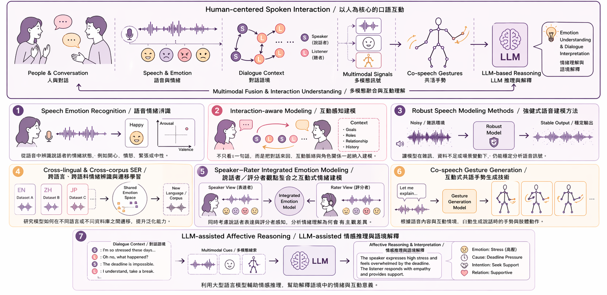
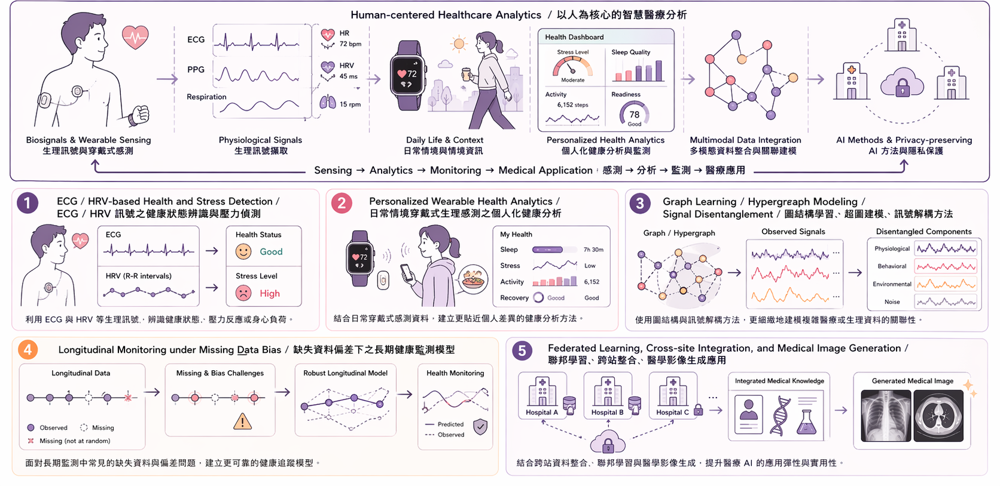
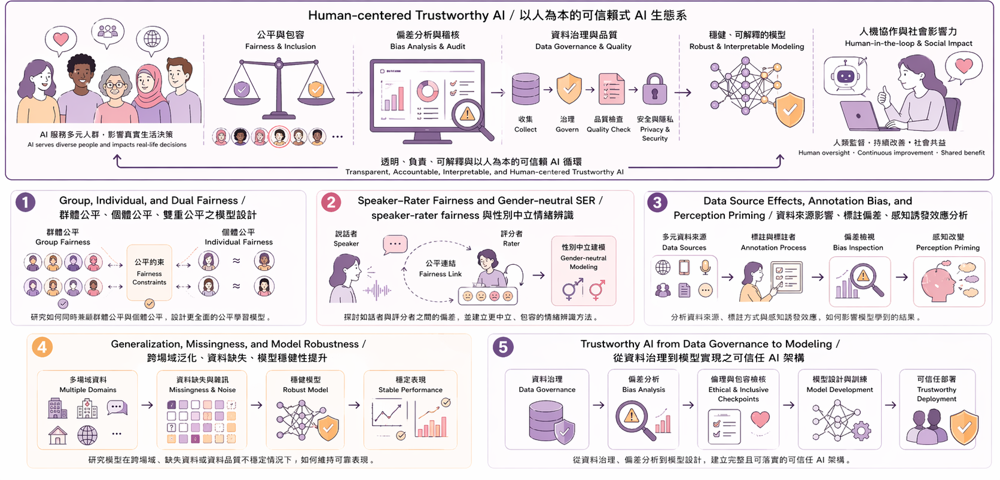

Research Highlights
My research views humans as complex dynamical systems, where internal states such as cognition, perception, emotion, production, and social interaction are expressed through measurable multimodal signals, including speech, language, physiology, gestures, facial expressions, and body movement. By combining signal processing, machine learning, and behavioral science, my work develops computational methods to infer these hidden human states and translate them into human-centered applications in affective computing, healthcare, and interactive AI.
Intelligent Spoken Interaction Computing
- Speech emotion and affective speech understanding
- Co-speech gesture and body movement modeling
- Dialogue- and interlocutor-aware interaction analysis
- Naturalistic multimodal interaction datasets
Intelligent Healthcare and Well-Being Analytics
- Wearable and physiological sensing for stress and well-being
- Speech-motion-cognition modeling for clinical assessment
- Longitudinal and missingness-aware health analytics
- Edge- and privacy-aware healthcare AI systems
Trustworthy and Inclusive AI
- Fairness across speakers, raters, groups, and individuals
- Bias and subjectivity in annotation and evaluation
- Robustness under noisy, missing, and cross-domain data
- Interpretable and accountable human-centered AI
Multimodal Signal Processing for Human-Centered Artificial Intelligence
My vision is to build AI systems that transform heterogeneous human signals into reliable, fair, and meaningful intelligence. As wearable sensing, speech interfaces, and interaction data become increasingly embedded in everyday life, I focus on algorithms that can handle human variability, missingness, contextual dynamics, and annotation bias, enabling multimodal AI to support real-world needs in emotion understanding, healthcare, well-being, and inclusive interaction.

Keywords: speech emotion recognition, multimodal interaction, spoken language technologies, healthcare analytics, wearable sensing, fairness, robustness, explainable AI, inclusive AI, human-centered computing.
Research Directions
Spoken Interaction Intelligence
口語互動智慧計算
This direction studies how AI can understand spoken interaction as a multimodal and social process. Beyond recognizing words or isolated emotions, the goal is to model how speech, emotion, dialogue context, co-speech gestures, and LLM-assisted reasoning work together in real communication.
- Speech emotion recognition and dialogue interpretation
- Interaction-aware modeling of speaker-listener dynamics
- Co-speech gesture analysis and generation
- LLM-assisted affective reasoning for contextual understanding

Intelligent Healthcare and Medical Analytics
智慧醫療健康分析
This direction develops multimodal sensing and AI methods for healthcare, well-being, and clinical decision support. I focus on transforming wearable, physiological, behavioral, and medical data into robust analytics that can support monitoring, assessment, and real-world healthcare applications.
- ECG/HRV and wearable-based health and stress detection
- Personalized and longitudinal health analytics
- Graph learning for heterogeneous biosignals and medical data
- Federated, privacy-aware, and cross-site medical AI

Trustworthy and Inclusive AI
可信賴式人工智慧
This direction addresses how AI systems can be reliable, fair, and inclusive when deployed in human-centered domains. My work studies bias and subjectivity in data, annotation, and evaluation, while developing robust and accountable models for diverse users and real-world contexts.
- Group, individual, and speaker-rater fairness
- Annotation bias, perception priming, and data source effects
- Generalization, missingness, and model robustness
- Trustworthy AI from data governance to deployment
